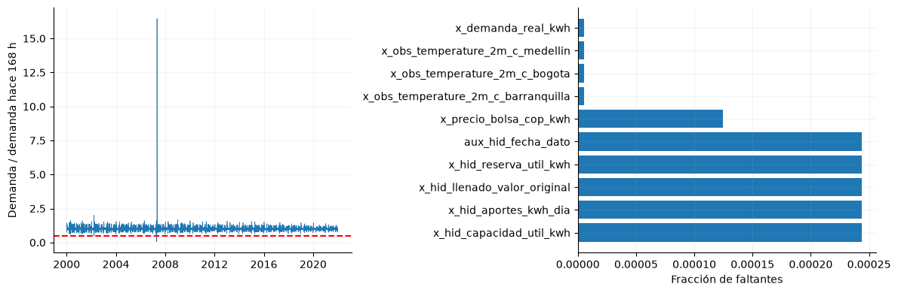
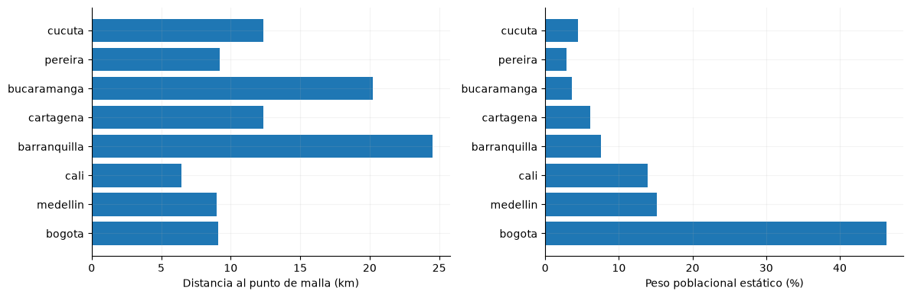

2. Calidad e integridad#
Se comprueban continuidad horaria, duplicados, faltantes, rangos y observaciones extremas. Los valores anómalos se conservan en los datos originales.
from pathlib import Path
import json
import numpy as np
import pandas as pd
import pyarrow.parquet as pq
import matplotlib
matplotlib.use('Agg')
import matplotlib.pyplot as plt
from IPython.display import display
ROOT = next(p for p in [Path.cwd(), *Path.cwd().parents] if (p/'data/processed/panel_horario.parquet').exists())
plt.rcParams.update({'figure.figsize':(10,4),'axes.spines.top':False,'axes.spines.right':False,'axes.grid':True,'grid.alpha':.15})
panel = pq.read_table(ROOT/'data/processed/panel_horario.parquet', filters=[('inicio','<',pd.Timestamp('2022-01-01',tz='America/Bogota'))]).to_pandas()
assert panel.index.max() < pd.Timestamp('2022-01-01',tz='America/Bogota')
assert panel.index.is_monotonic_increasing and panel.index.is_unique
y = panel['y_demanda_real_kwh']
gwh = y / 1e6
registro = json.loads((ROOT/'data/processed/feature_registry.json').read_text(encoding='utf-8'))
faltantes=len(pd.date_range(panel.index.min(),panel.index.max(),freq='h').difference(panel.index)); duplicados=panel.index.duplicated().sum(); display(pd.Series({'horas':len(panel),'horas_ausentes':faltantes,'duplicados':duplicados,'objetivo_nulo':int(y.isna().sum()),'objetivo_no_positivo':int((y<=0).sum())})); nulos=panel.isna().mean().sort_values(ascending=False)
razon=y/y.shift(168); anomalas=razon[razon<.5]; display(pd.DataFrame({'demanda_GWh':gwh.loc[anomalas.index],'razon_semanal':anomalas})); n_anomalas=len(anomalas)
fig,axes=plt.subplots(1,2,figsize=(12,4)); axes[0].plot(y.index,razon,lw=.5); axes[0].axhline(.5,color='r',ls='--'); axes[0].set_ylabel('Demanda / demanda hace 168 h'); axes[1].barh(nulos.head(10).index,nulos.head(10)); axes[1].set_xlabel('Fracción de faltantes'); fig.tight_layout(); display(fig); plt.close(fig)
horas 192864
horas_ausentes 0
duplicados 0
objetivo_nulo 0
objetivo_no_positivo 0
dtype: int64
| demanda_GWh | razon_semanal | |
|---|---|---|
| inicio | ||
| 2002-03-16 23:00:00-05:00 | 2.089924 | 0.494457 |
| 2002-03-17 00:00:00-05:00 | 1.885344 | 0.487262 |
| 2007-04-26 10:00:00-05:00 | 0.413149 | 0.061439 |
| 2007-04-26 11:00:00-05:00 | 0.856097 | 0.125170 |
| 2007-04-26 12:00:00-05:00 | 2.572178 | 0.390730 |

Se identifican 0 horas ausentes y 0 duplicados en desarrollo. Hay 5 horas con demanda inferior a la mitad de su referencia semanal; requieren revisión de fuente y contexto antes de cualquier corrección.
Rangos y coherencia de las mediciones#
Se comprueban valores finitos y restricciones de interpretación: humedad entre 0 y 100 %, precipitación no negativa y almacenamiento no negativo. El llenado superior a uno se registra por separado para contrastarlo con reserva y capacidad; no se corrige ni se interpreta automáticamente como un porcentaje.
controles=[]
for col in panel.select_dtypes(include='number'):
s=panel[col]; valida=s.dropna()
if 'relative_humidity' in col: fuera=(valida<0)|(valida>100)
elif 'precipitation' in col or col in ['x_hid_reserva_util_kwh','x_hid_aportes_kwh_dia']: fuera=valida<0
elif col=='x_hid_capacidad_util_kwh': fuera=valida<=0
else: fuera=pd.Series(False,index=valida.index)
controles.append({'variable':col,'no_finitos_no_nulos':int((~np.isfinite(valida)).sum()),'fuera_rango':int(fuera.sum())})
controles=pd.DataFrame(controles)
incidencias=controles.loc[(controles.no_finitos_no_nulos>0)|(controles.fuera_rango>0)]
if len(incidencias): display(incidencias)
n_rango=int(controles.fuera_rango.sum()); n_inf=int(controles.no_finitos_no_nulos.sum())
hid=panel[['x_hid_llenado_valor_original','x_hid_reserva_util_kwh','x_hid_capacidad_util_kwh']].dropna()
desacuerdo=(hid.iloc[:,0]-hid.iloc[:,1]/hid.iloc[:,2]).abs()
error_ratio=float(desacuerdo.max())
fechas_sobreuno=panel.loc[panel.x_hid_llenado_valor_original>1,'aux_hid_fecha_dato'].nunique()
Se registran 0 incumplimientos de los rangos evaluados y 0 valores infinitos no nulos. El llenado supera uno en 31 fechas hidráulicas distintas; la discrepancia máxima entre el indicador y reserva/capacidad es 5e-06. Las cifras repetidas por hora reflejan la frecuencia diaria de la fuente, no mediciones hidráulicas independientes.
Representatividad geográfica y poblacional#
Las series meteorológicas representan puntos de malla próximos a ocho ciudades. La distancia al punto solicitado cuantifica una diferencia de localización, no el error de temperatura o precipitación. Los pesos poblacionales son estáticos: no describen la distribución histórica del consumo eléctrico ni la evolución demográfica anual.
geo=pd.read_csv(ROOT/'data/raw/numeric/ciudades.csv')
lat1=np.radians(geo.lat_solicitada); lat2=np.radians(geo.lat_malla)
dlat=lat2-lat1; dlon=np.radians(geo.lon_malla-geo.lon_solicitada)
a=np.sin(dlat/2)**2+np.cos(lat1)*np.cos(lat2)*np.sin(dlon/2)**2
geo['distancia_km']=6371*2*np.arcsin(np.sqrt(a.clip(0,1)))
geo['peso']=geo.habitantes_censo_2018_ajustado/geo.habitantes_censo_2018_ajustado.sum()
fig,axes=plt.subplots(1,2,figsize=(12,4))
axes[0].barh(geo.ciudad,geo.distancia_km); axes[0].set_xlabel('Distancia al punto de malla (km)')
axes[1].barh(geo.ciudad,100*geo.peso); axes[1].set_xlabel('Peso poblacional estático (%)')
fig.tight_layout(); display(fig); plt.close(fig)
distancia_max=float(geo.distancia_km.max()); ciudad_peso=geo.loc[geo.peso.idxmax(),'ciudad']; peso_max=float(100*geo.peso.max())

La separación máxima entre coordenada solicitada y malla es 24.54 km. bogota concentra el 46.3 % del promedio ponderado, por lo que esa representación puede atenuar condiciones de ciudades con menor peso. Validar el error meteorológico requiere estaciones emparejadas; la proximidad geográfica no basta para estimarlo.
Decisión. Mantener los extremos y documentar los nulos introducidos por rezagos.
Impacto. Evita confundir indisponibilidad inicial con huecos de la fuente.
Riesgo. Eliminar observaciones atípicas sin evidencia puede suprimir eventos reales.